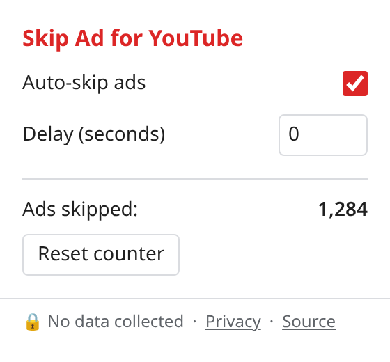

The Skip button,
clicked for you.
When a YouTube ad becomes skippable, it's skipped. No more watching the corner of the screen.
Not an ad blocker: ads still start, and unskippable ads play.
When a YouTube ad becomes skippable, it's skipped. No more watching the corner of the screen.
Not an ad blocker: ads still start, and unskippable ads play.
